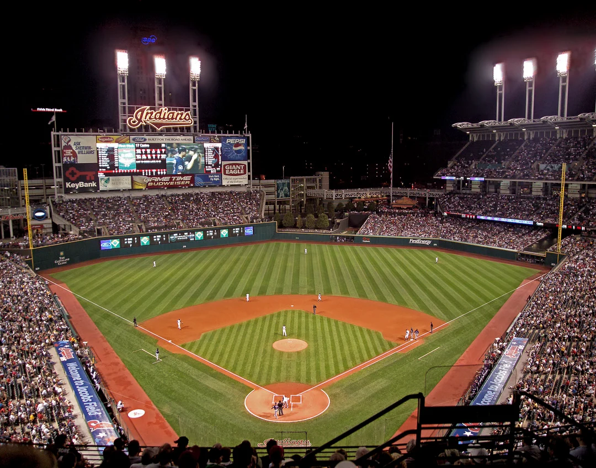

How the Game of Baseball is Played
Baseball is a game played between two teams of nine players each. The objective is to score more runs than the opposing team.
The game consists of nine innings. Each team gets a turn batting and fielding. After three outs, the teams switch roles.
Positions in Baseball
- Pitcher
- Catcher
- First Base
- Second Base
- Third Base
- Shortstop
- Left Field
- Center Field
- Right Field
How a Team Scores a Run
- The batter hits the ball and runs to first base.
- The player advances to second and third base.
- The player crosses home plate to score a run.
Baseball Stadium Image
